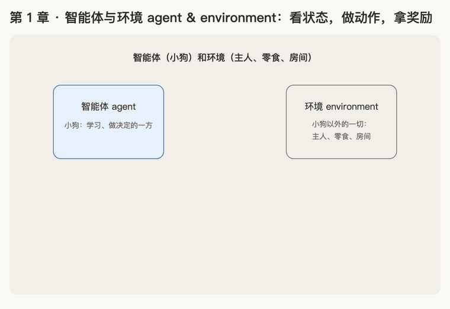

第 1 章 · 智能体与环境 agent & environment
本章回答：强化学习到底在"学"什么？谁在学、跟谁打交道？它和"有标准答案"的学习有什么不同？
讲解日期：2026-10-26（第二步、附录 2026-11-13 补）· 上一章：— · 下一章：第 2 章 奖励与回报
对应原文：Sutton & Barto §3.1 The Agent–Environment Interface（materials/text/books/sutton-barto-RLbook2020.txtL3539–L3580、L3698–L3700），§1.1 强化学习 vs 监督学习（L974–L985）
本章缩写：RL = Reinforcement Learning（强化 / 学习）；MDP = Markov Decision Process（马尔可夫 / 决策 / 过程，第 5 章细讲）；S&B = Sutton & Barto（教材两位作者的姓）；\(S_t\) / \(A_t\) / \(R_t\)：S = State（状态）、A = Action（动作）、R = Reward（奖励），下标 t = time step（第几步）。全部缩写见 附录 · 缩写与术语表
讲解
第一步：训练小狗：看情况、做动作、拿零食（2026-10-26）
你教小狗坐下：
- 小狗看到眼前的情况（你举起手、手里有零食）；
- 小狗做一个动作（坐下 / 乱跑）；
- 你给反馈：坐下就给零食，乱跑就什么都没有；
- 情况变了（零食吃掉了、你换了个手势），回到第 1 步。
没人告诉小狗"正确答案是坐下"，它只能靠反复试、看零食多少，慢慢学会。
换成书里的名字：
| 类比 | 术语 | 符号 | 怎么读 |
|---|---|---|---|
| 小狗（学习、做决定的一方） | 智能体 agent | — | — |
| 小狗以外的一切（你、零食、房间） | 环境 environment | — | — |
| 小狗看到的情况 | 状态 state | \(S_t\) | "S 下标 t"：第 t 步的状态 |
| 小狗做的动作 | 动作 action | \(A_t\) | "A 下标 t"：第 t 步的动作 |
| 零食（一个数，越多越好） | 奖励 reward | \(R_{t+1}\) | "R 下标 t 加 1"：做完第 t 步动作后拿到的奖励 |
\(t\) 是第几步（0、1、2、3……），像钟表一格一格走。
原文 L3542–L3543：学习、做决定的一方叫 agent，"everything outside the agent" 都叫 environment。
每一步的循环：看到 \(S_t\) → 做 \(A_t\) → 环境给回 \(R_{t+1}\) 和新状态 \(S_{t+1}\)。一步步串起来就是一条轨迹 trajectory（式 3.1，L3579）：
注意下标：奖励是做完动作之后才拿到的，所以第 0 步动作换来的奖励记作 \(R_1\)，不是 \(R_0\)。书的脚注 4（L3605–L3608）说：写成 \(R_{t+1}\) 是为了强调"下一个奖励和下一个状态是一起决定的"；也有书写成 \(R_t\)，两种写法都常见，读论文时留意一下。
小狗第一轮：\(S_0\) = 主人举手，\(A_0\) = 坐下，\(R_1 = 1\)（一块零食），\(S_1\) = 主人放下手。
一句话：智能体看状态、做动作，环境回一个奖励和新状态；串起来就是轨迹，奖励的下标比动作大 1。
第二步：和"有标准答案"的学习比：没人告诉你正确动作（2026-11-13）
监督学习 supervised learning 是你在 Transformer 那本讲义里见过的学法：每道题都配好标准答案（标签 label），模型做错了，直接告诉它"应该是这个"。比如翻译模型，每句英文都配着正确的德文。
强化学习 不一样：
| 监督学习 | 强化学习 | |
|---|---|---|
| 给的反馈 | 正确答案是什么 | 刚才做得好不好（一个分数） |
| 类比 | 老师批改时写出正确答案 | 教练只说"这球打得 7 分" |
| 反馈什么时候来 | 马上，每道题都有 | 可能很晚（下棋要等到终局） |
| 数据从哪来 | 别人准备好的题库 | 自己动手试出来的 |
原文 L975–L985 的意思是：监督学习靠"知识丰富的外部老师"给出带标签的例子；但在需要互动的问题里，很难事先准备好又对、又覆盖所有情况的正确示范，智能体必须从自己的经验里学。
所以强化学习有两个特有的难处，后面各有几章专门讲：
- 要自己去试：不试就不知道别的动作好不好（第 13 章"探索与利用"）；
- 奖励来得晚：赢了一盘棋，是哪一步下得好？（第 2–3 章回报、第 22 章优势函数）
一句话：监督学习告诉你"正确答案"，强化学习只告诉你"得了几分"，正确的做法要自己试出来。
第三步：智能体和环境的边界：改不了的都算环境（2026-11-13）
问题：机器人的手臂、电机算智能体还是环境？直觉上"机器人的身体就是它自己"，但书里不这么分。
原文 L3698–L3700 的规则：凡是智能体不能随心所欲改变的东西，都算在它外面，属于环境。
| 东西 | 算哪边 | 为什么 |
|---|---|---|
| 机器人的"大脑"（做决定的程序） | 智能体 | 它能自己决定输出什么 |
| 机器人的电机、手臂、摄像头 | 环境 | 电机不是想转多快就转多快，有物理限制 |
| 小狗的肌肉、腿 | 环境 | 同上 |
| 奖励怎么算 | 环境 | 智能体不能自己给自己发零食 |
类比：开车。 你（智能体）能决定踩多深的油门；但车怎么加速、路滑不滑、红绿灯什么时候变，都不由你说了算，全是环境。
最后一行很重要：奖励永远在环境那边。如果智能体能随便改自己的奖励，它就会直接把奖励改成最大，什么都不学了。
一句话：边界不是按"身体"划，而是按"能不能随意改"划；改不了的（包括奖励）都是环境。
动画演示：看状态、做动作、拿奖励，串成轨迹

可交互版：animations/l01-agent-environment.html（要能点按钮、拖滑块，需要用本地服务打开，见 animations/README.md"跑起来看"）。
怎么看：
- 左边智能体（小狗），右边环境（主人、零食、房间）；
- t = 0：环境给状态 \(S_0\) → 小狗做动作 \(A_0\) → 环境给回 \(R_1\) 和 \(S_1\)；
- 奖励的下标比动作大 1：第 0 步的奖励叫 \(R_1\)；
- 串起来就是轨迹 \(S_0, A_0, R_1, S_1, A_1, R_2, \dots\)（第 2 轮是编的）；滑块：看前 t 步的轨迹，同色的一组是一步。
练习与作答记录
题 1：玩"超级马里奥"时，智能体、环境、状态、动作、奖励分别是什么？
作答：（待作答）
题 2：小狗的轨迹是 \(S_0\) = 举手，\(A_0\) = 坐下，\(R_1\) = 1，\(S_1\) = 放手，\(A_1\) = 乱跑，\(R_2\) = 0。如果有人把它写成 "\(S_0, A_0, R_0, S_1, A_1, R_1\)"，按本书的写法，哪里写错了？
作答：（待作答）
题 3：扫地机器人的电池电量，算智能体还是环境？按第三步的规则说出理由。
作答：（待作答）
口诀
看状态，做动作，拿奖励，再看新状态；
奖励下标大一号；
监督学习给答案，强化学习只给分；改不了的都是环境。
本章复习卡片
- R01（交互循环与轨迹记号；为什么第一个奖励是 \(R_1\)）
- R02（强化学习和监督学习的区别；智能体与环境的边界）
附录 · 延伸阅读
留给以后深入学习用，不影响本章主线。★ 是建议先读的。
- 教材文本版：materials/text/books/sutton-barto-RLbook2020.txt（下面的 L 行号都指这个文件）；
- CS 285 slides 文本版：materials/text/cs285-slides/lec-NN.txt。
推荐阅读
| 读什么 | 读哪里 | 读它为了什么 |
|---|---|---|
| ★ Sutton & Barto §3.1 | L3539–L3580（交互循环、式 3.1）、L3698–L3712（边界规则） | 本章原文 |
| Sutton & Barto §1.1 | L974–L1000 | 强化学习 vs 监督学习 vs 无监督学习 |
| Sutton & Barto §3.1 例 3.1–3.2 | L3736–L3779（生物反应器、抓放机器人） | 同一套框架怎么套到不同问题上：状态、动作、奖励各是什么 |
| CS 285 第 4 讲 RL Basics | lec-04.txt L1–L35 |
课程版的定义：observation、state、action、policy，接第 5 章 MDP |
| 王树森《深度强化学习》slides | chinese/wangshusen-DRL/Slides/1_Basics_1.pdf |
中文的术语对照 |
数学原理
本章还没有用到计算，只有记号：
- 下标 \(t\) 是离散的时间步 0, 1, 2, …（书只讨论离散时间，脚注 2，L3601–L3602）；
- 轨迹是一串交替出现的 S、A、R，奖励下标比同一步的动作大 1。
公式清单
| 公式 | 意思 |
|---|---|
| \(S_t \to A_t \to (R_{t+1}, S_{t+1})\) | 一步交互 |
| \(S_0, A_0, R_1, S_1, A_1, R_2, \dots\) | 轨迹（式 3.1） |
代码对照：把本章的例子用代码走一遍
代码在
cs285-deep-rl/solutions/chapter-code/ch01_agent_environment.py，测试tests/test_ch01_04.py。Mac 上直接能跑：
同一章的 Jupyter notebook：cs285-deep-rl/solutions/chapter-code/notebooks/ch01_agent_environment.ipynb（讲解和代码放在一起，一格一格边读边跑；代码都写在格子里，Colab 也能直接打开）。
bash cd cs285-deep-rl/solutions/chapter-code uv run python ch01_agent_environment.py
| 讲义 | 代码 | 跑出来 |
|---|---|---|
| 环境 | class DogEnv 的 step(action) 返回 (奖励, 新状态) |
— |
| 轨迹 | rollout(env, ["坐下", "乱跑"]) |
S0=主人举手, A0=坐下, R1=1, S1=主人放下手, A1=乱跑, R2=0, S2=主人举手 |
代码里才看得到的：step() 这个函数名就是后面所有 RL 代码库（Gymnasium、CS 285 作业）的标准接口：智能体把动作交给 env.step(a)，环境回给它奖励和新状态。第 2 个动作"乱跑"之后 R2 = 0，下标正好比动作大 1。